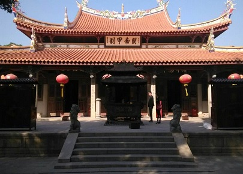

morly旅游网
庭下如积水空明,水中藻、荇交横,盖竹柏影也.月光的皎洁、明亮与美好
承天寺位于福建省泉州市中心承天巷对面南俊巷东侧，又名月台寺，南唐保大末年至中兴初年（公元957－958年）建寺，历代屡经重修，与开元寺、崇福寺并称泉州三大丛林，有“一尘不染”、“梅石生香”等奇景。承天寺原为五代节度使留从效的南花园，南唐保大末年至中兴初年（957一958年）建寺，初名“南禅寺”。北宋景德四年（1007年）赐名承天寺，其规模仅次于开元寺，为闽南三大丛林之一。
承天寺又名月台寺，位于崇阳门东南、南俊巷东侧。承天寺屡修屡废，历经千年，建筑规模却越来越大，与开元寺、崇福寺并称为“泉州三大丛林”。鼎盛时期殿宇曾达40多座，海内外许多名僧大德出其门庭。文革期间寺宇大毁，弥勒殿、法堂、钟鼓楼、廊庑及山亭塔幢等等被毁，其他则用作民宅、办工厂。我们现在所看到的承天寺是85年在原址重修的。承天寺环境清幽，颇具城市山林之概，是闹市难得的一片园林缘地。被称为“城市山林”的十奇景分别是：偃松清风、方池梅影、卷帘朝日、榕径午荫、塔无栖禽、瑶台明月、推蓬雨夜、啸庵竹声、鹦歌暮云、石如鹦鹉。南宋泉州太守王十朋将这十景加以总结，写有“十奇”诗七律十首，后明书法家张瑞图将这十景书刻于碑文，传之后世。但也有人认为“月台倒影”、“一尘不染”、“梅石生香”各为十景之一。
相传建寺时，因规模宏大，需用木材无数，为此，有位得道和尚到闽北杉山去向山主化缘。山主以伪善的态度苛刻地说：“你如果能把你们需要的那些大杉树折断尾梢，我可以施舍，听你砍伐。”和尚和山主立约后，当夜作法，狂风掠过，巨杉末梢果然尽折，山主仍然讥笑说：“树可砍倒，且看你怎样运走？”哪知得道和尚用禅杖向折梢的巨杉一撞，巨杉立时不见，而在泉州南禅寺大龙王井，却一株一株的浮涌出来，建寺的木材，就这样筹足了。
元代，寺内建有七级浮屠，明嘉靖时，又增建檀樾祠，但屡遭兵焚，历代屡经修葺。现存寺宇是清康熙三十年（1692年）重修的。寺内有七座宋代石塔及石经幢。大雄宝殿前有两口“放生池”，池旁有两座“飞来塔”。关于这两塔的来历，也有一段神话传说：相传当年有一名台湾游方和尚双手托着两座塔，四方化缘。一天，双塔不翼而飞。后来佛祖托梦给他，说他只有找到宝刹，找到真正的立身之地，双塔方能回归。后来，这位台湾的和尚到泉州找到宝刹承天寺后，到该寺定居。不久，果然双塔飞来，耸立在大雄宝殿前。由此取名“飞来塔”。
内容整理至网络，如有侵权，请联系我们！1255394075@qq.com